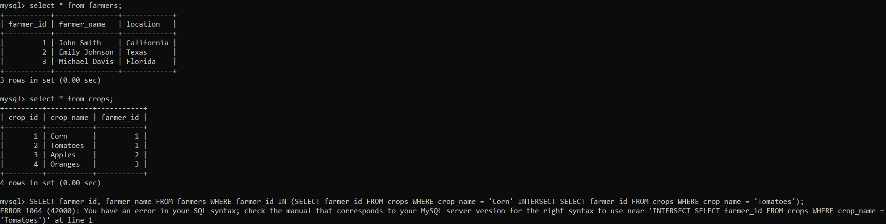

Intersect
The INTERSECT operator combines the result sets of two or more SELECT statements
and returns a single result set that contains only the rows that are common to
all the result sets. It retains only the rows that exist in all result sets.
